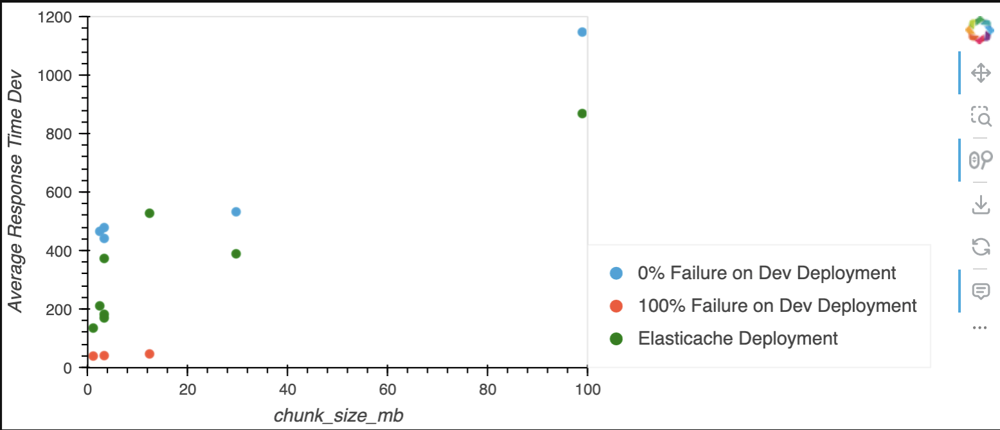

# Import libraries
import os
import pandas as pd
import hvplot.pandas
import holoviews as hv
pd.options.plotting.backend = 'holoviews'
import warnings
warnings.filterwarnings('ignore')
import sys
sys.path.append('..')
from helpers import dataframe
# You will need to set credentials to access nasa-eodc-data-store
from helpers import eodc_hub_role
credentials = eodc_hub_role.fetch_and_set_credentials()Comparing dev and feature
This notebook compares results between dev and feature titiler deployments. Running end-to-end benchmarks is documented in https://github.com/developmentseed/tile-benchmarking/tree/main/03-e2e/README.md.
This notebook is comparing titiler-xarray’s dev branch at commit 9ac1686612d with a feature deployment that includes diskcache and another feature deployment (feature2) that includes fsspec’s filecache using EFS.
# Remove any previous results
!rm -rf downloaded_dev_results/
!rm -rf downloaded_feature*_results/%%capture
!aws s3 cp --recursive s3://nasa-eodc-data-store/tile-benchmarking-results/dev_2023-11-17_01-07-52/ downloaded_dev_results/
!aws s3 cp --recursive s3://nasa-eodc-data-store/tile-benchmarking-results/feature_2023-11-17_01-09-35/ downloaded_feature_results/Parse and merge results into a single dataframe.
results = { 'feature': {}, 'dev': {} }
for env in results.keys():
# Specify the directory path and the suffix
directory_path = f"downloaded_{env}_results/"
suffix = "_urls_stats.csv" # For example, if you're interested in text files
# List all files in the directory
all_files = os.listdir(directory_path)
# Filter the files to only include those that end with the specified suffix
files_with_suffix = [f"{directory_path}{f}" for f in all_files if f.endswith(suffix)]
dfs = []
for file in files_with_suffix:
df = pd.read_csv(file)
df['file'] = file
dfs.append(df)
merged_df = pd.concat(dfs)
merged_df['dataset'] = [file.split('/')[1].replace('_urls_stats.csv', '') for file in merged_df['file']]
results[env]['all'] = merged_df
# The "Aggregated" results represent aggregations across tile endpoints.
results[env][f'Aggregated {env}'] = merged_df[merged_df['Name'] == 'Aggregated']dataset_specs_all = dataframe.csv_to_pandas('zarr_info.csv')
dataset_specs_all.loc[dataset_specs_all['collection_name'] == 'GLDAS_NOAH025_3H.A20230731.2100.021.nc4', 'chunk_size_mb'] = 3.29
dataset_specs_all.loc[dataset_specs_all['collection_name'] == 'pr_day_ACCESS-CM2_historical_r1i1p1f1_gn_1950.nc', 'chunk_size_mb'] = 3.29
dataset_specs_all.loc[dataset_specs_all['collection_name'] == '3B-DAY.MS.MRG.3IMERG.20000601-S000000-E235959.V07.nc4', 'chunk_size_mb'] = 12.359
dataset_specs_all.loc[dataset_specs_all['collection_name'] == '3B42_Daily.19980101.7.nc4', 'chunk_size_mb'] = 1.0986
dataset_specs_all.loc[dataset_specs_all['collection_name'] == '20231107090000-JPL-L4_GHRSST-SSTfnd-MUR-GLOB-v02.0-fv04.1.nc', 'chunk_size_mb'] = 98.8769
dataset_specs_all| collection_name | source | chunks | shape_dict | dtype | chunk_size_mb | compression | number_of_spatial_chunks | number_coordinate_chunks | |
|---|---|---|---|---|---|---|---|---|---|
| 0 | power_901_monthly_meteorology_utc.zarr | s3://power-analysis-ready-datastore/power_901_... | {'y': 504, 'x': 25} | {'y': 361, 'x': 576} | float64 | 2.403259 | Blosc(cname='lz4', clevel=5, shuffle=SHUFFLE, ... | 16.502857 | 2.0 |
| 1 | cmip6-pds_GISS-E2-1-G_historical_tas | s3://cmip6-pds/CMIP6/CMIP/NASA-GISS/GISS-E2-1-... | {'y': 600, 'x': 90} | {'y': 90, 'x': 144} | float32 | 29.663086 | Blosc(cname='lz4', clevel=5, shuffle=SHUFFLE, ... | 0.240000 | 1.0 |
| 2 | pr_day_ACCESS-CM2_historical_r1i1p1f1_gn_1950.nc | https://nex-gddp-cmip6.s3-us-west-2.amazonaws.... | {'y': 'N', 'x': '/'} | {'y': 600, 'x': 1440} | float32 | 3.290000 | NaN | NaN | 0.0 |
| 3 | 20231107090000-JPL-L4_GHRSST-SSTfnd-MUR-GLOB-v... | s3://podaac-ops-cumulus-protected/MUR-JPL-L4-G... | NaN | NaN | NaN | 98.876900 | NaN | NaN | NaN |
| 4 | GLDAS_NOAH025_3H.A20230731.2100.021.nc4 | s3://gesdisc-cumulus-prod-protected/GLDAS/GLDA... | NaN | NaN | NaN | 3.290000 | NaN | NaN | NaN |
| 5 | combined_CMIP6_daily_GISS-E2-1-G_tas_kerchunk.... | s3://veda-data-store-staging/cmip6-GISS-E2-1-G... | {'y': 1, 'x': 600} | {'y': 600, 'x': 1440} | float32 | 3.295898 | Zlib(level=5) | 1440.000000 | 1.0 |
| 6 | 3B-DAY.MS.MRG.3IMERG.20000601-S000000-E235959.... | s3://gesdisc-cumulus-prod-protected/GPM_L3/GPM... | NaN | NaN | NaN | 12.359000 | NaN | NaN | NaN |
| 7 | 3B42_Daily.19980101.7.nc4 | s3://gesdisc-cumulus-prod-protected/TRMM_L3/TR... | NaN | NaN | NaN | 1.098600 | NaN | NaN | NaN |
dev_df = results['dev'][f'Aggregated dev']
feature_df = results['feature'][f'Aggregated feature']
merged_df = pd.merge(dev_df, feature_df, on='dataset', how='outer', suffixes=(' Dev', ' Feature'))merged_df| Type Dev | Name Dev | Request Count Dev | Failure Count Dev | Median Response Time Dev | Average Response Time Dev | Min Response Time Dev | Max Response Time Dev | Average Content Size Dev | Requests/s Dev | ... | 75% Feature | 80% Feature | 90% Feature | 95% Feature | 98% Feature | 99% Feature | 99.9% Feature | 99.99% Feature | 100% Feature | file Feature | |
|---|---|---|---|---|---|---|---|---|---|---|---|---|---|---|---|---|---|---|---|---|---|
| 0 | NaN | Aggregated | 72 | 72 | 40.0 | 41.447202 | 33.066396 | 71.701161 | 25.000000 | 35.684044 | ... | 180 | 180 | 200 | 300 | 400 | 590 | 590 | 590 | 590 | downloaded_feature_results/GLDAS_NOAH025_3H.A2... |
| 1 | NaN | Aggregated | 63 | 63 | 42.0 | 47.271887 | 31.334788 | 124.351495 | 25.000000 | 31.427106 | ... | 560 | 570 | 650 | 680 | 1300 | 1400 | 1400 | 1400 | 1400 | downloaded_feature_results/3B-DAY.MS.MRG.3IMER... |
| 2 | NaN | Aggregated | 99 | 0 | 400.0 | 479.420260 | 326.557901 | 2005.666132 | 894.696970 | 6.606166 | ... | 130 | 130 | 140 | 150 | 950 | 1100 | 1100 | 1100 | 1100 | downloaded_feature_results/pr_day_ACCESS-CM2_h... |
| 3 | NaN | Aggregated | 96 | 0 | 410.0 | 442.367982 | 259.548367 | 1282.006897 | 619.895833 | 7.328215 | ... | 400 | 420 | 480 | 610 | 910 | 920 | 920 | 920 | 920 | downloaded_feature_results/combined_CMIP6_dail... |
| 4 | NaN | Aggregated | 95 | 0 | 440.0 | 466.461665 | 321.840139 | 955.261172 | 1285.578947 | 6.789084 | ... | 230 | 260 | 320 | 400 | 530 | 700 | 700 | 700 | 700 | downloaded_feature_results/power_901_monthly_m... |
| 5 | NaN | Aggregated | 74 | 74 | 38.0 | 39.977600 | 31.084701 | 82.652176 | 25.000000 | 37.103145 | ... | 140 | 140 | 150 | 170 | 190 | 260 | 260 | 260 | 260 | downloaded_feature_results/3B42_Daily.19980101... |
| 6 | NaN | Aggregated | 98 | 0 | 510.0 | 533.349295 | 457.155891 | 823.361621 | 694.000000 | 6.136320 | ... | 410 | 430 | 470 | 500 | 550 | 600 | 600 | 600 | 600 | downloaded_feature_results/cmip6-pds_GISS-E2-1... |
| 7 | NaN | Aggregated | 98 | 0 | 810.0 | 1148.146438 | 487.173877 | 8375.012818 | 15813.704082 | 3.030609 | ... | 900 | 940 | 1800 | 2000 | 7700 | 8500 | 8500 | 8500 | 8500 | downloaded_feature_results/20231107090000-JPL-... |
8 rows × 47 columns
merged_df['Failure Rate Dev'] = merged_df['Failure Count Dev']/merged_df['Request Count Dev'] * 100
merged_df['Failure Rate Feature'] = merged_df['Failure Count Feature']/merged_df['Request Count Feature'] * 100
summary_df = merged_df[
[
'Average Response Time Dev', 'Failure Rate Dev',
'Average Response Time Feature', 'Failure Rate Feature',
'dataset'
]
].sort_values('Average Response Time Dev')
merged_specs = summary_df.merge(dataset_specs_all, left_on='dataset', right_on='collection_name')merged_specs['Failure Dev Desc'] = merged_specs['Failure Rate Dev'].map({
100.0: '100% Failure on Dev Deployment',
0.0: '0% Failure on Dev Deployment'
})merged_specs| Average Response Time Dev | Failure Rate Dev | Average Response Time Feature | Failure Rate Feature | dataset | collection_name | source | chunks | shape_dict | dtype | chunk_size_mb | compression | number_of_spatial_chunks | number_coordinate_chunks | Failure Dev Desc | |
|---|---|---|---|---|---|---|---|---|---|---|---|---|---|---|---|
| 0 | 39.977600 | 100.0 | 135.752199 | 0.0 | 3B42_Daily.19980101.7.nc4 | 3B42_Daily.19980101.7.nc4 | s3://gesdisc-cumulus-prod-protected/TRMM_L3/TR... | NaN | NaN | NaN | 1.098600 | NaN | NaN | NaN | 100% Failure on Dev Deployment |
| 1 | 41.447202 | 100.0 | 182.846702 | 0.0 | GLDAS_NOAH025_3H.A20230731.2100.021.nc4 | GLDAS_NOAH025_3H.A20230731.2100.021.nc4 | s3://gesdisc-cumulus-prod-protected/GLDAS/GLDA... | NaN | NaN | NaN | 3.290000 | NaN | NaN | NaN | 100% Failure on Dev Deployment |
| 2 | 47.271887 | 100.0 | 528.403546 | 0.0 | 3B-DAY.MS.MRG.3IMERG.20000601-S000000-E235959.... | 3B-DAY.MS.MRG.3IMERG.20000601-S000000-E235959.... | s3://gesdisc-cumulus-prod-protected/GPM_L3/GPM... | NaN | NaN | NaN | 12.359000 | NaN | NaN | NaN | 100% Failure on Dev Deployment |
| 3 | 442.367982 | 0.0 | 373.812323 | 0.0 | combined_CMIP6_daily_GISS-E2-1-G_tas_kerchunk.... | combined_CMIP6_daily_GISS-E2-1-G_tas_kerchunk.... | s3://veda-data-store-staging/cmip6-GISS-E2-1-G... | {'y': 1, 'x': 600} | {'y': 600, 'x': 1440} | float32 | 3.295898 | Zlib(level=5) | 1440.000000 | 1.0 | 0% Failure on Dev Deployment |
| 4 | 466.461665 | 0.0 | 211.593559 | 0.0 | power_901_monthly_meteorology_utc.zarr | power_901_monthly_meteorology_utc.zarr | s3://power-analysis-ready-datastore/power_901_... | {'y': 504, 'x': 25} | {'y': 361, 'x': 576} | float64 | 2.403259 | Blosc(cname='lz4', clevel=5, shuffle=SHUFFLE, ... | 16.502857 | 2.0 | 0% Failure on Dev Deployment |
| 5 | 479.420260 | 0.0 | 170.310049 | 0.0 | pr_day_ACCESS-CM2_historical_r1i1p1f1_gn_1950.nc | pr_day_ACCESS-CM2_historical_r1i1p1f1_gn_1950.nc | https://nex-gddp-cmip6.s3-us-west-2.amazonaws.... | {'y': 'N', 'x': '/'} | {'y': 600, 'x': 1440} | float32 | 3.290000 | NaN | NaN | 0.0 | 0% Failure on Dev Deployment |
| 6 | 533.349295 | 0.0 | 389.752392 | 0.0 | cmip6-pds_GISS-E2-1-G_historical_tas | cmip6-pds_GISS-E2-1-G_historical_tas | s3://cmip6-pds/CMIP6/CMIP/NASA-GISS/GISS-E2-1-... | {'y': 600, 'x': 90} | {'y': 90, 'x': 144} | float32 | 29.663086 | Blosc(cname='lz4', clevel=5, shuffle=SHUFFLE, ... | 0.240000 | 1.0 | 0% Failure on Dev Deployment |
| 7 | 1148.146438 | 0.0 | 869.393643 | 0.0 | 20231107090000-JPL-L4_GHRSST-SSTfnd-MUR-GLOB-v... | 20231107090000-JPL-L4_GHRSST-SSTfnd-MUR-GLOB-v... | s3://podaac-ops-cumulus-protected/MUR-JPL-L4-G... | NaN | NaN | NaN | 98.876900 | NaN | NaN | NaN | 0% Failure on Dev Deployment |
NOTE: We don’t have chunk information for prod giovanni cache dataset since it is protected (it can be added).
ylim = 1200
xlim = 100
dev_line = merged_specs.hvplot.scatter(
x='chunk_size_mb', y='Average Response Time Dev', by='Failure Dev Desc',
xlim=(0, xlim), ylim=(0, ylim)
)
# Plot feature
feature_line = merged_specs.hvplot.scatter(
x='chunk_size_mb', y='Average Response Time Feature', label='Elasticache Deployment', color='green',
xlim=(0, xlim), ylim=(0, ylim)
)
# Combine the two line plots
combined_plot = dev_line * feature_line
combined_plot